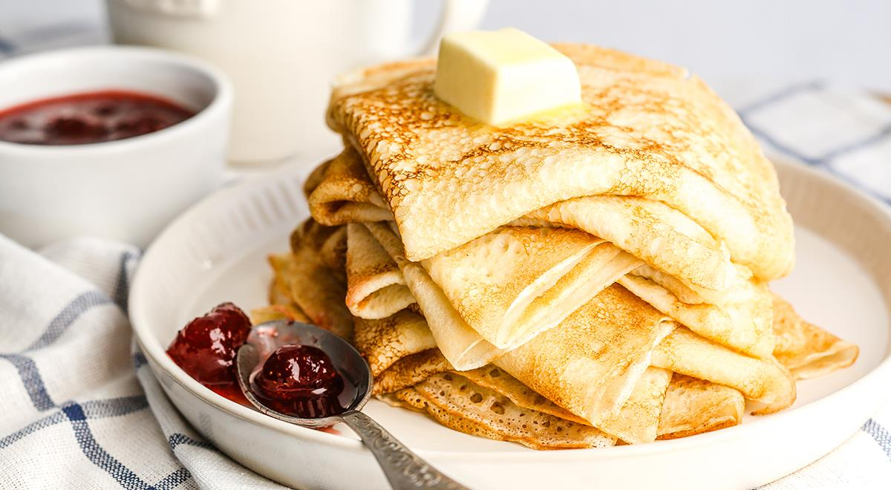

БЛИНЧИКИ
Ингредиенты
- яйца - 3 шт
- мука - 260 г
- молоко - 500 мл
- вода - 0,5 стакана
- подс.масло - 3 ст.ложки
- сахар - 1 ст.ложка
- соль - 1 ч. ложка
- ванилин - по желанию
Этапы приготовления
- Смешайте яйца, сахар, соль и ванилин.
- Добавьте половину объема молока и муку. Размешайте до однородной консистенции.
- Воду закипятите и добавьте в тесто, хорошо размешайте.
- Влейте 3 ст.ложки подсолнечного масла и оставшуюся часть молока (лучше в подогретом виде).
- Оставьте тесто на 20-25 минут. После чего можете печь блинчики.
Советы для подачи
Начинки можно добавлять любые. Можно подсмотреть рецепты приготовления начинок на сайте.
Подавать лучше всего со сметаной.